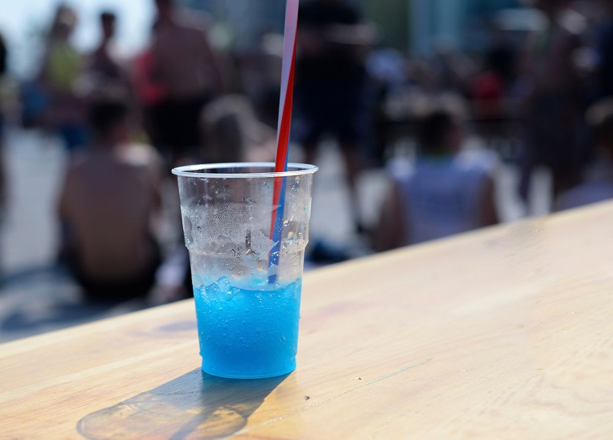

Home
Slush Punch

Description
This recipe makes a great punch slushie for all ages to enjoy. It
takes 8 hours to freeze and makes 50 servings.
Ingredients
- 6 cups water
- 2 1/2 cups white sugar
- 2 (3 ounce) packages strawberry flavored Jell-O mix
- 1 (46 fluid ounce) can pineapple juice
- 2/3 cup lemon juice
- 1 quart orange juice
- 2 (2 liter) bottles lemon-lime flavored carbonated beverage